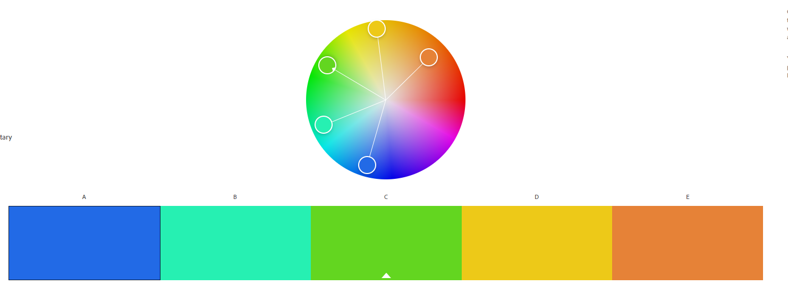

Dokumentation
TCP
TCP er en forkortelse for Transmission Control Protocol. TCP er en protokol vi bruger til at oprette forbindelse mellem forskellige maskiner, og derefter sende datapakker mellem forskellige klienter.
IP adresser
IP adresser er en slags indentifikations numre så forskellige maskiner kan identificere hinanden, og sende data pakken til den rigitige modtagende maskine
Html Tags
Tags bruges til at indikere starten og slutningen på et HTML element
Farver
Jeg har brugt adobe farvehjul til at bestemme min farver, for at sikre mig at farverne spiller med hindanden, og at der ikke bliver brugt farver der skærer eller skaber optiske illusioner
Layout
I forhold til layout har valgt at putte en Top bar på siden, for at gøre navigationen simpel, ellers er det bare en stor fed brødtekst, og så et par eksperiemnenter som ligger i top baren, som place holders og lidt random jokes, siden burde og skalere sådan nogenlunde. Desuden har jeg lavet en sidebar med lidt info om mig. Da jeg følte det var ret funky
head

Head tagget bruger jeg til at definere alt min metadata med, såsom hvilke karaterer min browser skal forstå, og hvilken css fil jeg refferer til
Unordered list og Hyperlink

Jeg laver en liste til min top bar, som jeg styler i css, desuden er det Hyperlinks, så de kan redirecte til andre sider eller subsider
div

Jeg har brugt divisions til at dele min hjemmeside op med, og det har hjulpet min hovedpine gevaldigt, da jeg sad og lavede css styling, divisions er min selv den gir mig en kraftig hjernblødning